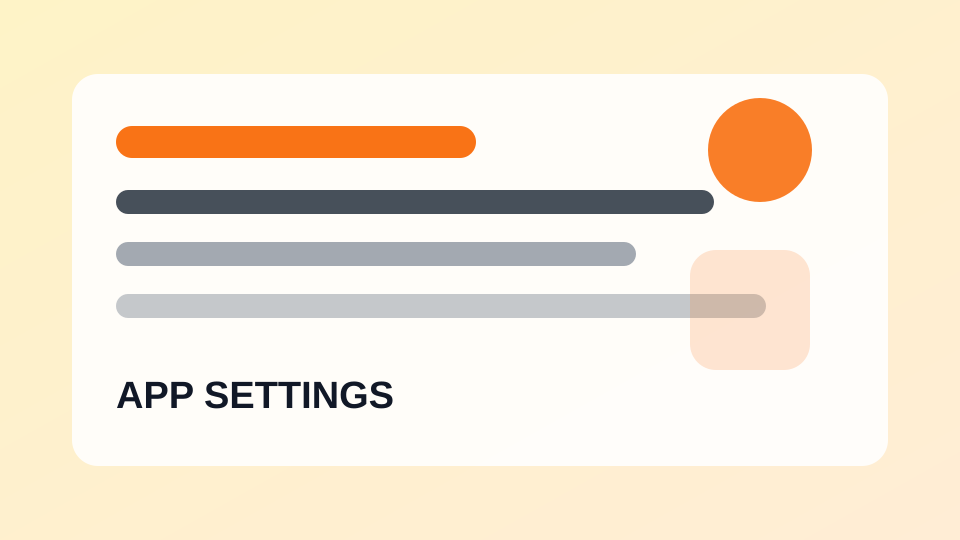

앱 설정카카오톡 저장공간 줄이는 방법
대화방 미디어와 캐시 파일을 정리해 휴대폰 공간을 확보합니다.
스마트폰, 앱 설정, 계정 보안, 백업과 생활 체크리스트를 쉽게 정리하는 디지털 생활 가이드
자주 쓰는 앱의 알림, 저장공간, 개인정보 설정을 안내합니다.

앱 설정대화방 미디어와 캐시 파일을 정리해 휴대폰 공간을 확보합니다.
추천 영상이 부담스러울 때 기록 관리 기능을 확인합니다.
뉴스, 쇼핑, 메일, 인증 알림을 구분해 정리합니다.
모바일과 PC에서 쌓인 다운로드 파일을 확인하는 기준입니다.
항상 허용과 앱 사용 중 허용의 차이를 설명합니다.
원치 않는 사진이 갤러리에 쌓이지 않도록 설정합니다.
쿠폰, 이벤트, 배송 알림을 구분해 필요한 알림만 남깁니다.
일정 알림 시간과 반복 설정을 정리합니다.